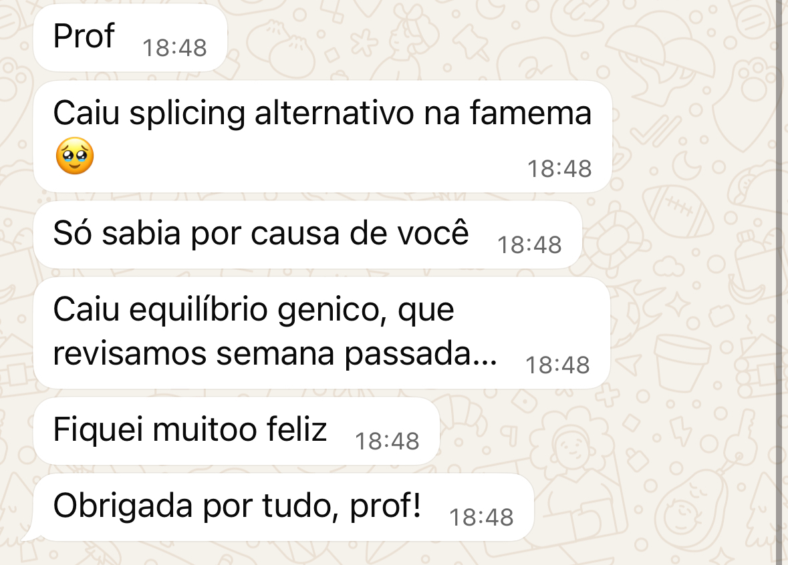
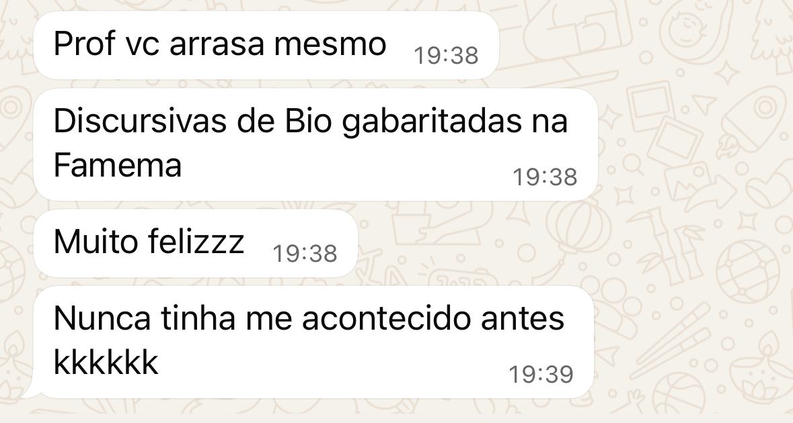
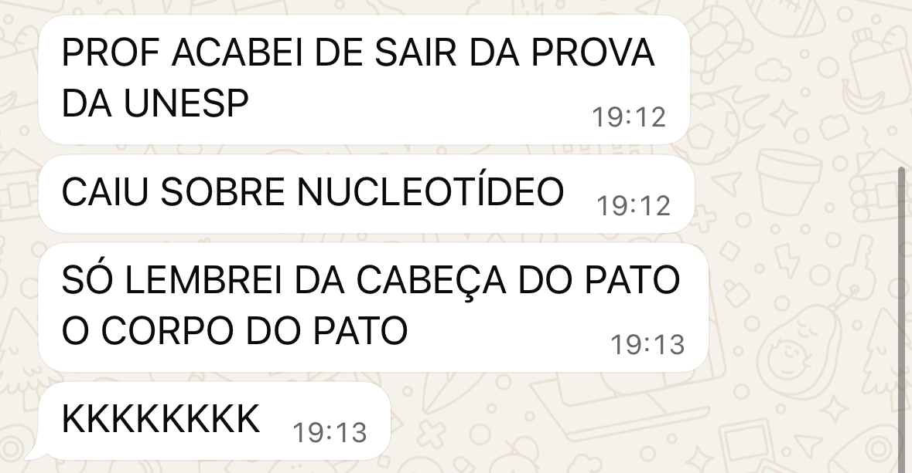
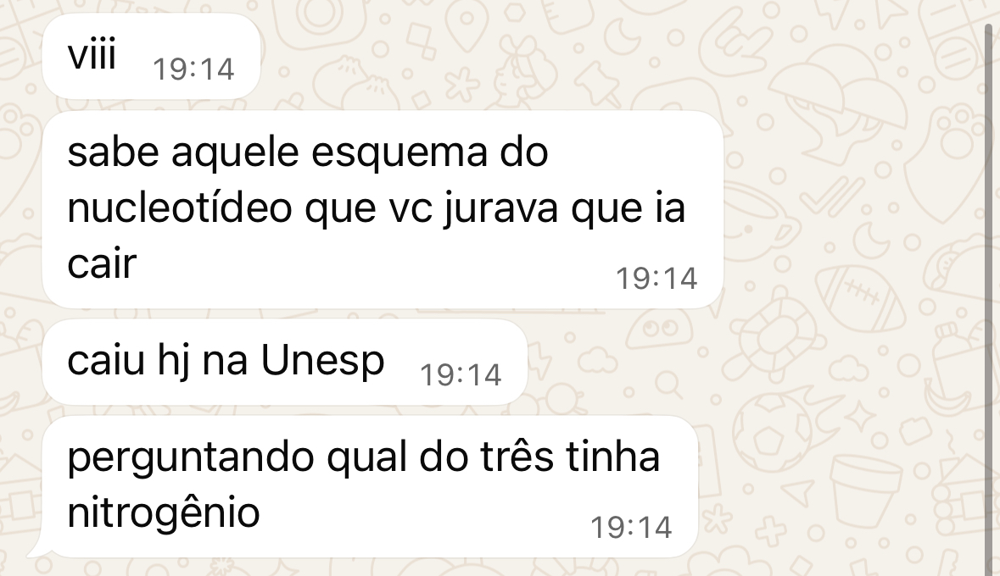

Do conteúdo espalhado à Biologia conectada.
Para quem já estudou Biologia, mas ainda sente que os conteúdos estão espalhados — e quer chegar ao ENEM enxergando as conexões que a prova exige.
Você pode ter assistido às aulas. Pode ter feito resumos. Pode reconhecer mitose, DNA, fotossíntese, genética, fisiologia, ecologia.
E ainda assim abrir uma questão do ENEM e pensar: "Eu já vi isso. Mas não sei o que essa questão quer de mim."
Esse é o problema.
Porque a prova não entrega a Biologia nas mesmas gavetas em que você estudou.
Ela pode começar falando de uma molécula. Levar você para dentro de uma célula. Relacionar aquilo ao funcionamento de um órgão. E terminar perguntando pela consequência no organismo ou no ambiente.
A matéria é a mesma. O que mudou foi a forma como você precisa pensar sobre ela.
E é exatamente para essa transição que existe a Revisão ENEM — Bio em Casa.
Por que criei a Revisão ENEM
Eu não criei essa revisão para colocar mais uma pilha de aulas na sua frente. Porque, na reta final, mais conteúdo, sozinho, não resolve uma revisão desorganizada.
Criei a Revisão ENEM para ajudar você a percorrer as grandes áreas da Biologia com uma rota. Retomar conceitos importantes. Reconstruir relações que talvez tenham ficado espalhadas ao longo do ano. Praticar como esse conhecimento aparece nas questões. E, principalmente, perceber o que você já consegue usar e onde ainda existem lacunas.
A proposta não é decorar Biologia inteira novamente. É começar a enxergar a lógica que conecta suas partes.
Porque quando você entende as relações, uma questão deixa de parecer uma mistura aleatória de assuntos. Você começa a perceber o caminho que existe por trás dela.
Essa é a base do Bio em Casa:
A Biologia não é um monte de capítulos.
Pense numa questão que apresenta uma alteração no DNA. Se você estudou tudo isoladamente, talvez sua cabeça procure imediatamente: "Isso é Genética."
Só que a questão pode continuar. A alteração no DNA modifica uma proteína. A proteína interfere no funcionamento de uma célula. A célula compromete um tecido. O tecido altera um órgão. E o órgão produz uma consequência no organismo.
Agora você não está mais resolvendo uma "questão de Genética". Você está atravessando:
DNA → proteína → célula → tecido → órgão → organismo.
É exatamente esse tipo de movimento entre escalas e conceitos que a Metodologia BC busca desenvolver.
A pergunta deixa de ser apenas: "Você lembra o conteúdo?" E passa a ser: "Você consegue usar o que sabe quando a questão não avisa qual conteúdo você precisa usar?"
Essa diferença muda tudo.
É aqui que entra a Metodologia BC
A Revisão ENEM não é uma sequência aleatória de aulas. Ela é construída sobre a Metodologia BC, o sistema pedagógico do Bio em Casa para organizar a aprendizagem e ajudar você a compreender a Biologia de maneira progressiva e integrada.
Em vez de enxergar dezenas de assuntos soltos, você começa a perceber:
Na prática, você deixa de estudar apenas para reconhecer palavras. E começa a caminhar em direção a algo muito mais importante:
Compreender → aplicar → analisar.
É por isso que a Metodologia BC trabalha com seis pilares complementares. Cada um atua sobre uma dimensão diferente da aprendizagem e, juntos, formam um único sistema.
Se você se identificou, a Revisão ENEM foi construída para esta reta final.
Talvez você não esteja começando do zero. Seu problema pode ser justamente o contrário: você viu muita coisa. E agora precisa transformar tudo isso em uma estrutura que consiga recuperar e utilizar.
É para isso que existe a rota.
O que você recebe
Uma rota estruturada pelas grandes áreas da Biologia
Em vez de decidir todos os dias "o que eu reviso agora?", você recebe um percurso organizado para atravessar os grandes blocos da disciplina.
A função dessa rota não é apenas marcar conteúdos como concluídos. É ajudar você a perceber como um assunto conversa com o próximo.
Você começa a trocar a sensação de "tem coisa demais para revisar" por uma pergunta muito mais útil: "onde estou e o que preciso recuperar agora?"
Aulas de revisão com a lógica do Bio em Casa
Você não vai encontrar apenas uma sucessão de definições. As aulas são construídas para retomar conceitos e explicitar relações.
Porque saber que a mitocôndria participa da respiração celular é uma camada. Entender como metabolismo, disponibilidade de oxigênio, produção de ATP e funcionamento de tecidos podem aparecer relacionados em uma questão é outra.
É essa segunda camada que interessa na prova.
Questões para transformar conhecimento em aplicação
Questão não entra apenas no final para conferir se você "decorou". Ela faz parte da revisão.
Porque uma questão pode revelar uma diferença brutal entre "eu lembro disso" e "eu consigo usar isso".
Ao praticar, você encontra exatamente os pontos em que seu conhecimento ainda precisa ser reconstruído, relacionado ou retomado.
Identificação das suas lacunas
Errar não deveria terminar em: "Droga. Marquei a alternativa errada."
O erro pode ser informação. Você não conhecia o conceito? Conhecia, mas interpretou errado? Entendeu o conceito, porém não conseguiu aplicá-lo? Conseguiu aplicar isoladamente, mas travou quando a questão exigiu integrar informações?
Essa diferença importa. O Bio em Casa trabalha o erro como ferramenta de diagnóstico: reconhecer o erro, compreender sua natureza e orientar a próxima ação.
Revisão pra não depender só da sensação de "eu já vi isso"
Existe uma armadilha silenciosa na reta final: abrir um resumo, reconhecer tudo e concluir "Sei essa matéria."
Reconhecer não é necessariamente conseguir recuperar. E recuperar não é necessariamente conseguir aplicar.
Por isso, a lógica do Bio em Casa incorpora retomadas e recuperação ativa do conhecimento, evitando usar apenas familiaridade como medida de aprendizagem.
Materiais e exercícios para acompanhar a rota
Você também conta com os materiais da revisão para apoiar as aulas e a prática. Não como uma coleção de PDFs para acumular. Mas como instrumentos dentro do percurso.
Aula → conexão → prática → diagnóstico → retomada.
O material serve à aprendizagem. Não o contrário.
Análise da matriz e orientação para a reta final
Existe um limite de tempo. Isso significa que escolher onde investir sua atenção também faz parte da preparação.
A revisão ajuda você a percorrer os conteúdos com critérios mais claros, testar sua compreensão e perceber quais pontos merecem nova atenção antes da prova.
Acompanhamento e suporte
Quando surgir uma dúvida no percurso, você não precisa transformar aquilo em mais uma pendência esquecida.
A proposta inclui acompanhamento e suporte dentro das condições apresentadas na oferta, para que dúvidas identificadas durante a revisão possam ser trabalhadas.
Não é mais conteúdo por conteúdo.
É conteúdo com posição. Com relação. Com contexto. Com aplicação.
Porque a diferença entre saber uma definição e conseguir resolver uma questão frequentemente está justamente nas conexões que você consegue construir.
Só o que faz sentido para transformar sua reta final em uma rota de revisão mais organizada, conectada e aplicável.
Sua linha do tempo
Primeiras 24 horas
Você entra na plataforma e deixa de encarar "Biologia inteira" como uma massa sem forma.
Você conhece a rota da revisão, entende como o percurso está organizado e já sabe por onde começar. Primeira mudança: sair da improvisação.
Primeiras 72 horas
Você começa a revisitar conceitos e percebe relações que podem ter passado despercebidas quando os assuntos foram estudados separadamente.
A pergunta deixa de ser apenas "Eu lembro?" e começa a ser "Eu consigo explicar? Relacionar? Usar?"
Ao longo da revisão
As conexões começam a ganhar forma. Uma questão de Ecologia pode exigir Bioquímica. Genética conversa com Evolução. Fisiologia depende de processos celulares. Embriologia se conecta à divisão celular.
Aquilo que parecia uma coleção enorme de matérias começa a revelar uma estrutura.
Até o ENEM
O objetivo é chegar à prova tendo percorrido uma rota estruturada pelas grandes áreas da Biologia, praticado sua aplicação e identificado os pontos que ainda merecem atenção.
Não existe promessa séria de "lembrar absolutamente tudo". Existe algo mais útil: mais clareza sobre o que você sabe, como os temas se conectam e o que ainda precisa retomar.
→ Conectado.
Para quem é a Revisão ENEM
Para quem é
Para quem não é
Isso não existe aqui. O que existe é método, conteúdo, conexão, prática e direção.
O que chega depois da prova.
Mensagens que alunos mandaram no WhatsApp saindo da prova.




O que está em jogo não é saber mais uma definição.
É conseguir olhar para uma questão e perceber: o que ela está mostrando; qual conhecimento está sendo exigido; como aquele conhecimento se relaciona a outros conceitos; e como usar aquilo para construir a resposta.
Essa é a passagem entre conteúdo fragmentado e conhecimento aplicável.
Ela não acontece acumulando mais abas na cabeça. Acontece quando as peças começam a conversar.
Do conteúdo espalhado à Biologia conectada.
12x R$29,70
ou R$297 à vista no Pix ou boleto
Acesso imediato após a confirmação do pagamento. 3 meses de acesso.
Depois desse prazo, a turma fecha e a rota recomeça só na próxima temporada de revisão.
Você já abriu conteúdo suficiente.
Você recebe acesso à Revisão ENEM — Bio em Casa e aos recursos efetivamente incluídos na oferta.
E aqui eu não vou te vender um ROI inventado. Não existe conta honesta do tipo "pague R$ X e receba Y pontos no ENEM." Seu resultado depende da sua base, do tempo disponível, da execução e de outras variáveis.
O que podemos colocar na sua frente é uma estrutura para você usar melhor uma coisa que, agora, vale muito: o tempo que ainda existe antes da prova.
Próximos passos
Você entra para a Revisão ENEM — Bio em Casa. Recebe acesso à plataforma e à rota de revisão. Começa pelo primeiro bloco.
Retoma os conceitos. Constrói as conexões. Pratica com questões. Identifica as lacunas. Volta ao que precisa de atenção. E segue avançando.
Do conteúdo espalhado à Biologia conectada.
Quero começar minha Revisão ENEM Bio em Casa — Prof. Vitor HugoO ENEM não precisa avisar: "esta questão é sobre mitose."
Pode simplesmente apresentar uma lesão, falar sobre reparação de tecido e esperar que você reconheça qual processo celular explica aquilo.
É justamente aí que existe diferença entre reconhecer um conteúdo quando alguém diz seu nome e conseguir mobilizá-lo diante de um problema. A Revisão ENEM foi construída para trabalhar essa passagem.
Talvez a pergunta mais importante da sua reta final não seja: "Quantas matérias ainda faltam?"
Talvez seja: "Quando a prova misturar as matérias, eu vou conseguir enxergar a conexão?"
É isso que queremos construir com você. Do conteúdo espalhado à Biologia conectada.